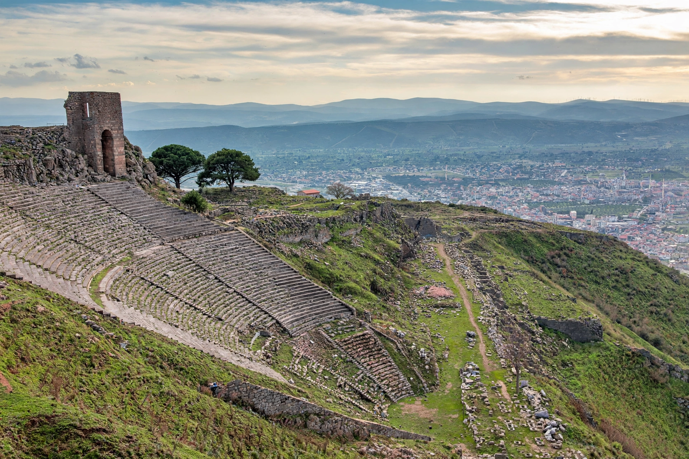

Pergamon
| Pergamon | |
|---|---|
 | |
| Location | Bergama, İzmir Province, Turkey |
| Region | Aeolis / Mysia, Asia Minor |
| Flourished | 3rd–2nd centuries BC (Attalid kingdom) |
| Status | UNESCO World Heritage Site (2014) |
Pergamon (Ancient Greek: Πέργαμον) was a rich and powerful ancient Greek city in Mysia in northwestern Asia Minor, near the modern town of Bergama in Turkey. Under the Attalid dynasty in the 3rd and 2nd centuries BC it became the capital of the Kingdom of Pergamon and one of the great cultural centres of the Hellenistic world, rival to Alexandria and Antioch.
History
The city's rise began with Philetaerus, a general who in 281 BC took control of the treasury of Lysimachus kept in the citadel and founded the Attalid line. His successors — above all Attalus I, who defeated the Galatians and took the royal title, and Eumenes II — expanded the kingdom across western Asia Minor and adorned the acropolis with temples, palaces, the great theatre, and the Pergamon Altar.
The last king, Attalus III, bequeathed his kingdom to Rome in 133 BC; Pergamon became a leading city of the Roman province of Asia. It remained prosperous under the Empire, with a famous sanctuary of Asclepius (the Asclepieion) where the physician Galen trained. One of the seven churches of Asia addressed in the Book of Revelation was at Pergamum. The city declined after earthquakes and Arab raids in the Byzantine period.
The library and parchment
The Library of Pergamon was said to hold some 200,000 scrolls, second only to Alexandria's. According to a famous (if partly legendary) account repeated by Pliny, when the Ptolemies embargoed papyrus exports to check Pergamon's library, the Attalids' subjects perfected the use of prepared animal skins — parchment, whose name derives from the city (Latin pergamena) — as a writing material.
Archaeology
German excavations beginning in 1878 under Carl Humann uncovered the acropolis; the frieze of the Great Altar was taken to Berlin and reconstructed in the Pergamon Museum. The archaeological site, including the acropolis, the Asclepieion, and the Red Basilica, was inscribed as a UNESCO World Heritage Site in 2014 as "Pergamon and its Multi-Layered Cultural Landscape".